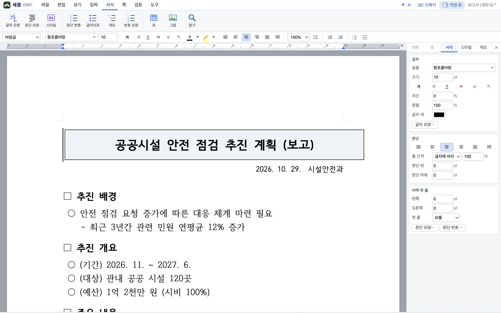

한글 문서,
그대로 열고 고치고 저장합니다.
세종은 맥용 무료 문서 편집기입니다. 한글(HWP·HWPX)은 물론 워드·PDF·엑셀·파워포인트 파일까지 한 앱에서 다룹니다. 한글에서 쓰던 메뉴와 단축키가 그대로라 배우지 않고 바로 씁니다.
Apple Silicon 맥 (macOS 11 이상) · 광고 없음 · 회원 가입 없음

한글을 바꿔 쓰려고 만들었습니다
같은 쪽, 같은 줄
한글이 저장한 줄 정보를 그대로 따라서 쪽과 줄이 어긋나지 않습니다. 함초롬체가 없는 컴퓨터에서도 줄 바꿈은 원래 글꼴의 글자 폭으로 맞춥니다.
다섯 가지 문서를 한 앱에서
HWP·HWPX·DOCX·PDF·XLSX·PPTX. 엑셀 파일은 셈터로, 파워포인트는 보임터로 열리고, 저장하면 손대지 않은 부분은 원본 그대로 남습니다.
문서는 내 컴퓨터에만
세종은 문서를 어디에도 보내지 않습니다. 인터넷에 하는 일은 새 버전이 나왔는지 묻는 것 하나뿐이고, AI 도우미는 열쇠를 넣고 켤 때만 움직입니다.
한글에서 하던 일, 그리고 그 너머
문서·시트·발표·PDF가 탭으로 나란히 열립니다. 시트의 값을 문서와 발표에 연결하고, 한글 문서로 발표를 만듭니다.
문서 한글 · 워드
표, 그림, 각주와 미주, 머리말과 꼬리말, 바탕쪽, 쪽 번호, 차례, 메모, 글상자, 수식까지. 한글의 서식 도구와 단축키 그대로입니다.
- 서식 자동 채우기 — 성명·소속·연락처 같은 빈칸을 내 정보로
- 개인 정보 찾아서 가리기, 문서 비교, 맞춤법
- 문서마당 서식 8가지, 메일 머지와 라벨 문서
- 워드 문서는 원본 구조를 지키며 저장
셈터 엑셀
수식 230여 개, 조건부 서식, 자동 필터, 피벗, 차트. 엑셀 97 형식(.xls)과 CSV도 엽니다.
- 저장하면 손대지 않은 칸과 서식은 원본과 바이트까지 같습니다
- 줄·칸을 넣고 지워도 표·메모·차트·조건부 서식이 함께 움직입니다
- 시트 값을 한글 문서와 발표에 연결하고 갱신
보임터 파워포인트
테마, 애니메이션, 화면 전환, 발표자 보기. 파워포인트 파일을 열어 고치고 그대로 저장합니다.
- 한글 문서에서 발표 만들기 — 제목과 본문을 슬라이드로
- 도형 90여 종, 표 스타일, 차트, SmartArt 보기
- 다른 발표의 슬라이드를 붙여 넣기
보고, 주석을 달고, 양식을 채우고, 글과 그림을 고칩니다. 필요하면 PDF를 한글 문서로 바꿔 자유롭게 편집합니다.
- 형광펜·메모·도장·그리기 주석, 양식 채우기
- 본문 글자 고치기와 찾아 바꾸기
- 쪽 정리 — 빼기, 돌리기, 순서 바꾸기
글꼴
글꼴 상자에서 글꼴 모양을 보며 고릅니다. 이 문서의 글꼴, 최근 쓴 글꼴, 한글·워드 글꼴, 이 컴퓨터의 모든 글꼴 — 이름이나 초성으로 찾습니다.
- 글꼴 파일(.ttf·.otf)을 창에 끌어다 놓으면 바로 쓸 수 있습니다
- 나눔고딕·나눔명조·Pretendard·송명이 함께 들어 있습니다 (무료 글꼴)
- 없는 글꼴은 비슷한 글꼴로 보이되, 줄 바꿈은 원래 글꼴 폭대로
AI 도우미 선택
내 Claude 열쇠를 넣거나 내 컴퓨터의 모델(Ollama)을 고르면, 문서·시트·발표를 읽고 고치는 일을 돕습니다. 제안을 보고 승인해야 문서에 적용되고, 되돌리기 한 번으로 돌아옵니다.
- 열쇠는 맥 키체인에 보관하고 세종은 서버를 두지 않습니다
- 고른 부분만 보내기
AI 에이전트가 한글 문서를 다루는 길
세종 안에는 창 없이 돌아가는 명령줄과 MCP 서버가 들어 있습니다. Claude Code·Claude Desktop 같은 에이전트가 한글(HWP·HWPX)·워드 문서를 구조로 읽고, 바꿀 문단만 명령으로 고쳐, 앱과 같은 방식으로 저장합니다. 서식은 손대지 않고 그 자리 것이 그대로 남습니다.
붙이기 — 한 줄
claude mcp add sejong -- \ /Applications/Sejong.app/Contents/Resources/cli/sejong mcp
Claude Desktop 은 설정의 mcpServers 에 같은 명령을 넣습니다. 앱의 도구 > AI 연결 (MCP)에서 복사할 수 있습니다.
토큰을 아끼는 순서
구조만 먼저(제목·표·누름틀·분량, 10쪽 공문이면 수백 토큰) → 필요한 문단 범위만 읽기 → 바꿀 문단만 명령으로 → 저장. 문서를 통째로 다시 쓰지 않고, 서식은 읽지도 보내지도 않습니다.
망가뜨릴 수 없게
명령은 미리 보기와 적용이 나뉘고, 원본 경로에 저장할 때는 .bak 을 남깁니다. 앱 안의 AI 도우미도 같은 명령을 쓰므로 사람이 승인하고 되돌리기 한 번으로 돌아옵니다. 문서는 이 컴퓨터 밖으로 나가지 않습니다.
명령줄: sejong outline 문서.hwp · sejong read 문서.hwp --from p0.3 --to p0.40 · sejong convert 문서.hwp 문서.docx · sejong apply 문서.hwp 명령.json -o 결과.hwp. 자세한 안내는 llms.txt.
지금 받아서 바로 씁니다
무료입니다. 회원 가입도, 광고도, 결제도 없습니다.
새 판이 나오면 앱이 알려 줍니다. 받아서 응용 프로그램 폴더의 세종을 바꿔 넣으면 문서와 설정은 그대로입니다.
처음 여는 법
- 받은 .dmg 를 열고 세종을 응용 프로그램 폴더로 끌어 놓습니다.
- 처음 실행하면 "확인되지 않은 개발자" 창이 뜹니다. 세종은 아직 애플 공증을 받지 않았기 때문입니다.
- 응용 프로그램 폴더에서 세종을 우클릭 → 열기 → 열기. 한 번만 하면 됩니다.
- macOS 15 부터는 시스템 설정 → 개인정보 보호 및 보안 맨 아래의 그래도 열기를 누릅니다.
그래도 열리지 않으면 터미널에서 xattr -cr /Applications/Sejong.app 을 한 번 실행합니다 (내려받은 파일에 붙는 '격리' 표시를 떼는 것뿐입니다).
세종은 문서를 어디에도 보내지 않고, 설치 때 다른 프로그램을 함께 넣지 않습니다.
궁금한 것
정말 무료인가요?
네. 모든 기능이 무료이고 회원 가입·광고·결제가 없습니다.
한글이 설치되어 있어야 하나요?
아니요. 한글이 없는 컴퓨터에서도 한글 문서를 열고 저장합니다. 한글이 깔려 있으면 그 글꼴(함초롬체 등)을 함께 써서 더 비슷하게 보입니다.
한글에서 만든 문서가 똑같이 보이나요?
쪽과 줄 바꿈은 한글이 저장한 대로 보입니다. 글꼴이 없으면 비슷한 글꼴로 대신 그리되 줄 바꿈은 원래 글꼴의 글자 폭으로 맞춥니다. 세종에서 저장한 문서는 한글에서 그대로 열립니다. 다르게 보이는 문서가 있으면 알려 주세요 — 고치는 데 가장 큰 도움이 됩니다.
인텔 맥이나 윈도우에서도 되나요?
지금은 Apple Silicon 맥용입니다. 인텔 맥용과 윈도우용은 그 다음에 준비합니다.
문서가 밖으로 나가나요?
아니요. 문서는 내 컴퓨터에만 있고 자동 저장도 내 컴퓨터 안입니다. 세종이 인터넷에 하는 일은 새 버전이 나왔는지 확인하는 것뿐입니다. AI 도우미는 내가 열쇠를 넣고 켤 때만 내가 고른 내용을 보냅니다.
한글과컴퓨터와 관계가 있나요?
없습니다. 세종은 한글과컴퓨터가 공개한 한글 문서 파일(.hwp) 문서를 참고해 만든 독립 소프트웨어입니다. '한글'과 'HWP'는 한글과컴퓨터의 상표입니다.
버그를 찾았어요.
아래 문의처로 알려 주세요. 어떤 문서에서 무엇을 했는지와, 도구 > 오류 기록 보기의 내용을 함께 보내 주시면 빨리 고칩니다. 고친 판이 나오면 앱이 알려 드립니다.